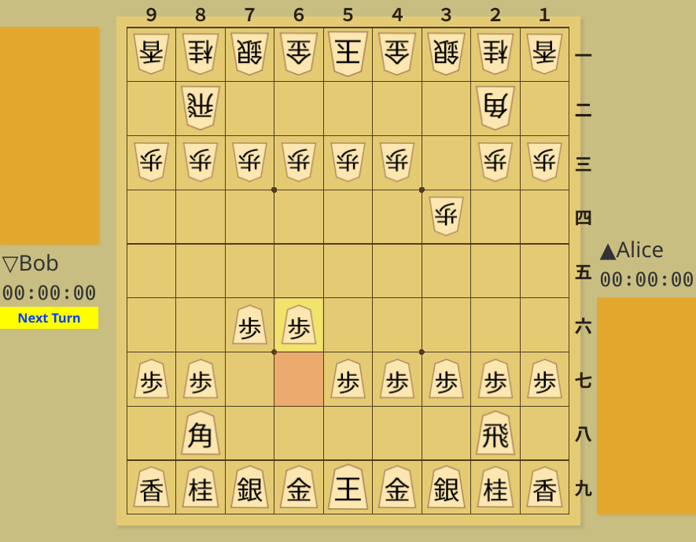
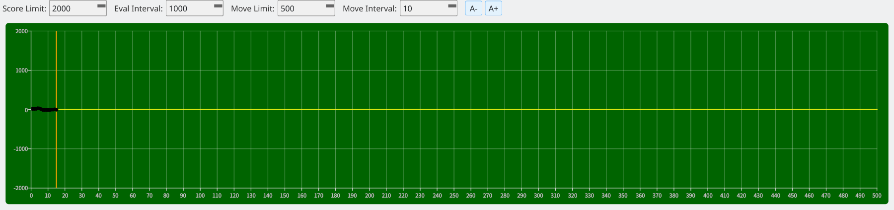

Save the board or evaluation graph as an image file
Screenshots were captured on Linux with the English interface.
Save the current board as an image file
Choose File → Save Board Image to File to save the currently displayed board as an image. The image includes the piece placement, pieces in hand, player names, and remaining time, making it useful for blogs and commentary articles.

Board image: save pieces, hands, player names, and remaining time
Save the evaluation graph as an image file
Choose File → Save Evaluation Graph Image to File to save the current graph as an image. This preserves the evaluation changes after game analysis, which is useful for reviewing games and preparing commentary.

Evaluation graph image: save the evaluation history to an image file